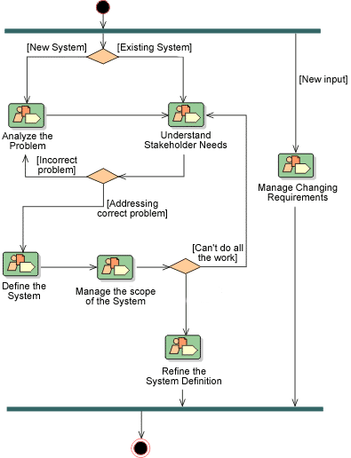

| Concept: Capability Pattern |
 |
|
|
Capabilities Patterns express and communicate process knowledge for a key area of interest such as a Discipline or a practice and can be directly used by process practitioners to guide their work. They are also used as building blocks to assemble Delivery Processes or larger Capability Patterns ensuring optimal reuse and application of the key practices they express.
Examples for Capability Pattern could be 'use case-based requirements management', 'use case analysis', or 'unit
testing'. Typically but not necessarily, Capability Patterns have the scope of one Discipline providing a breakdown of
reusable complex Activities, relationships to the Roles which perform Tasks within these Activities, as well as to the
Work Products that are used and produced. Generally, a Capability Pattern does not relate to any specific phase
or iteration of a development lifecycle, and should not imply any. In other words, a pattern should be designed
in a way that it is applicable anywhere in a Delivery Process. This enables its Activities to be flexibly
assigned to whatever phases there are in the Delivery Process to which it is being applied. An exception to this
would be capability patterns that are intended to provide a template for quickly creating an iteration or portion of an
iteration for a particular phase in a Delivery Process.
The workflow of a Capability Pattern is usually represented using the UML Activity Diagram notation.

Sample activity diagram, from the requirements Discipline in RUP, showing workflow and transitions. |
© Copyright IBM Corp. 1987, 2005 All Rights Reserved |